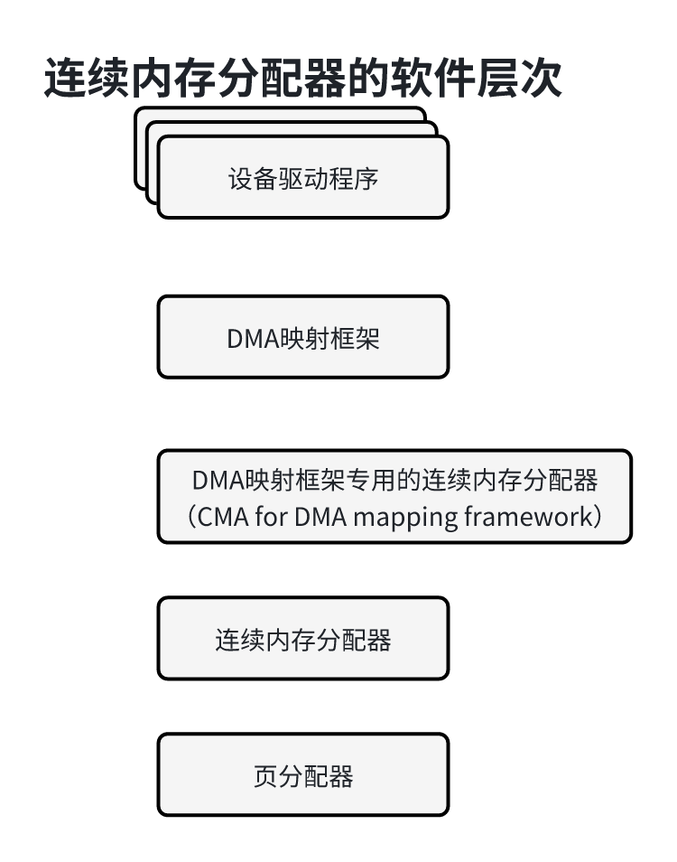
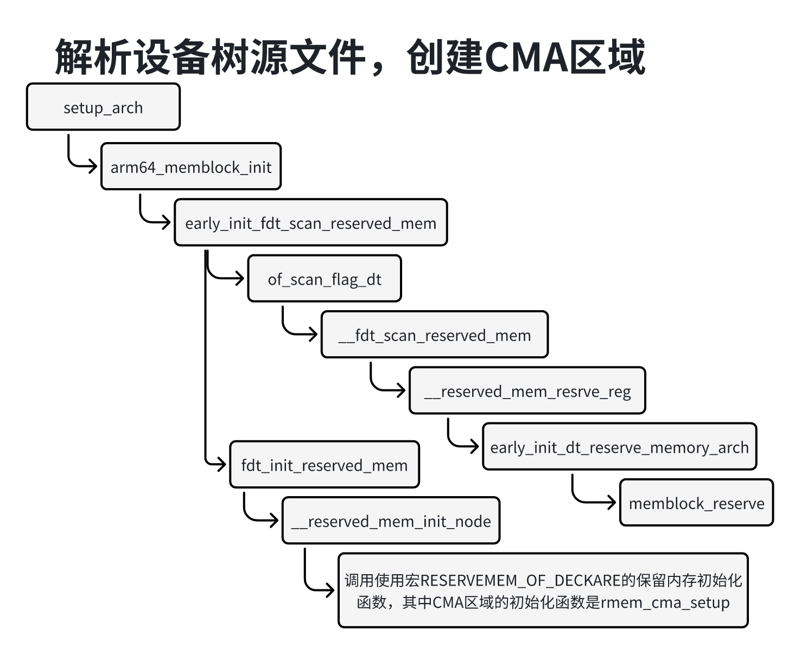
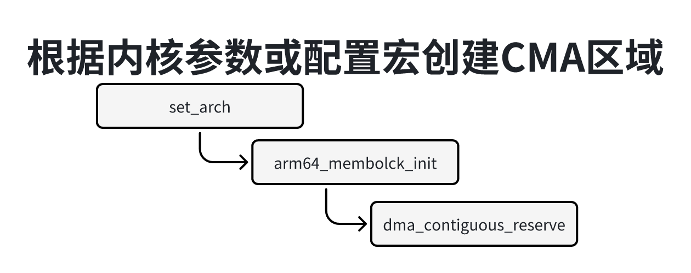
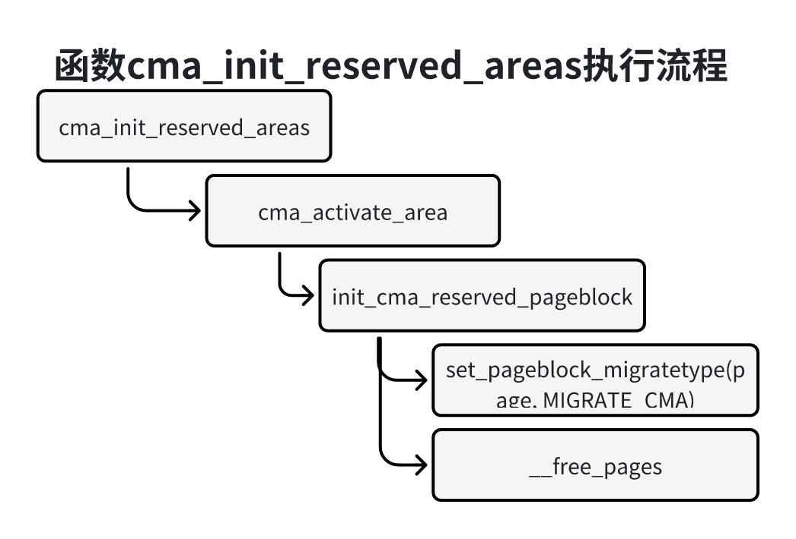
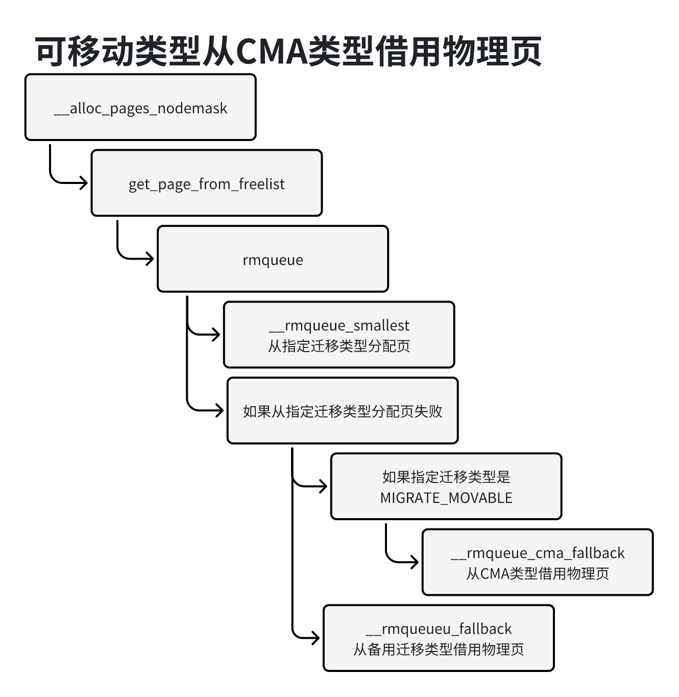
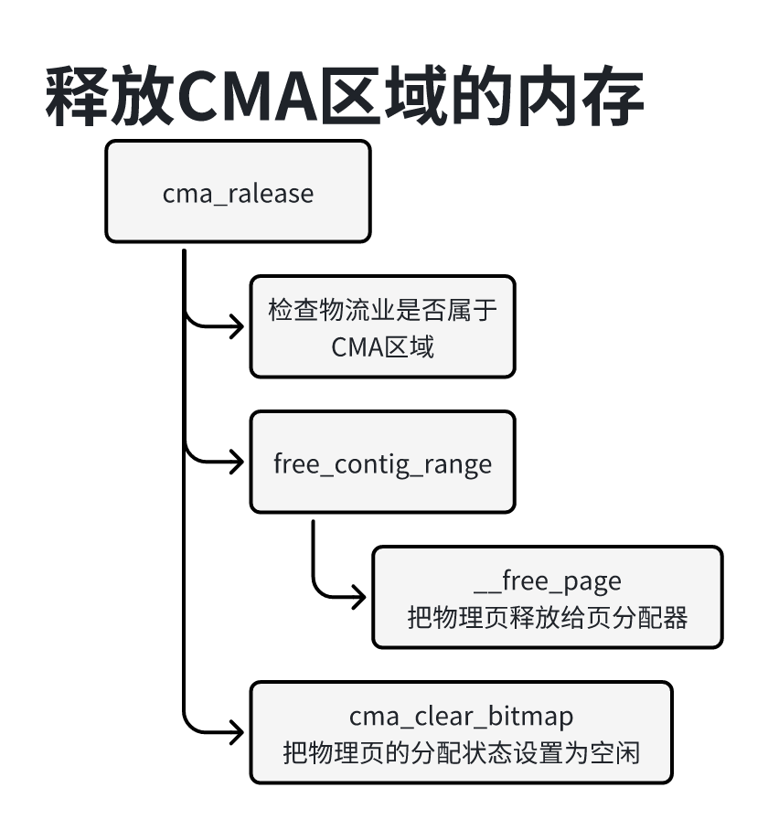
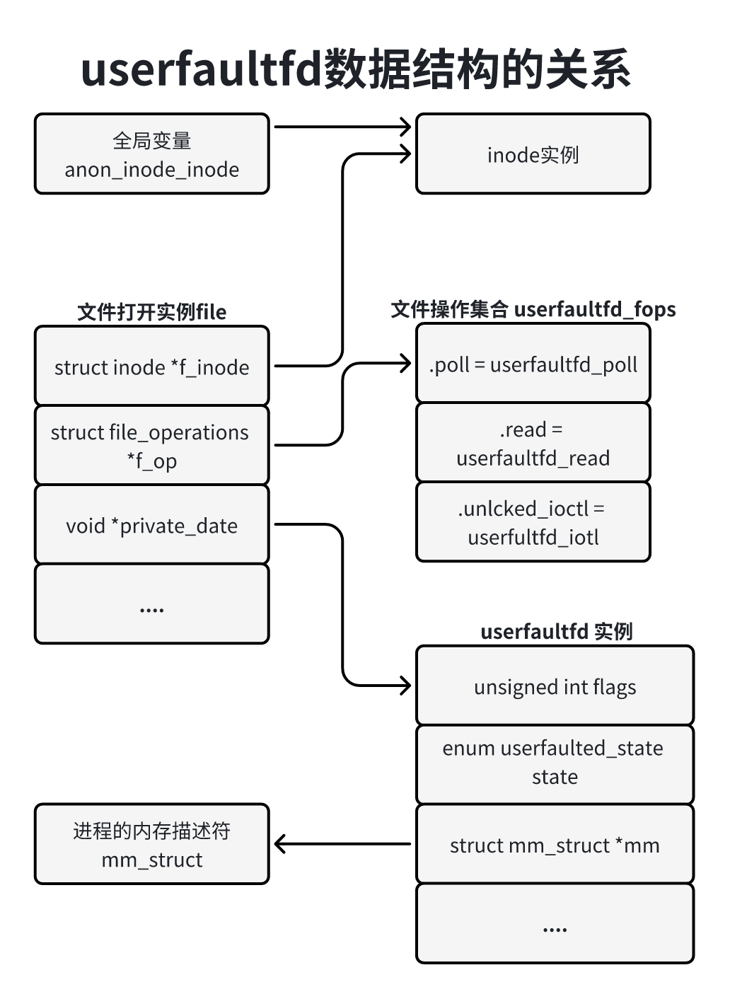
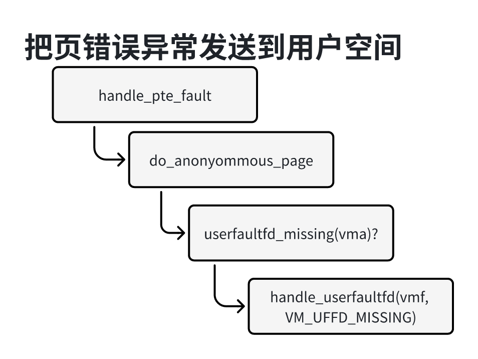
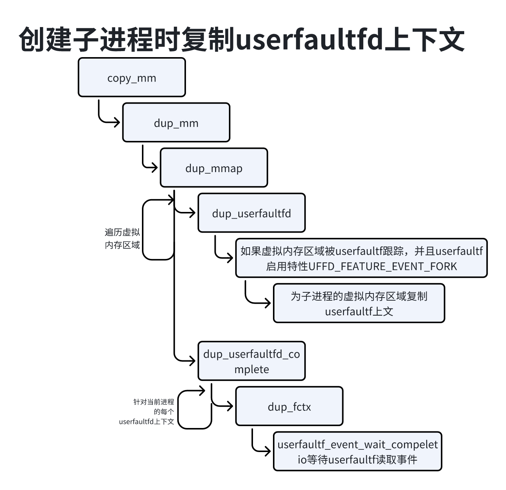
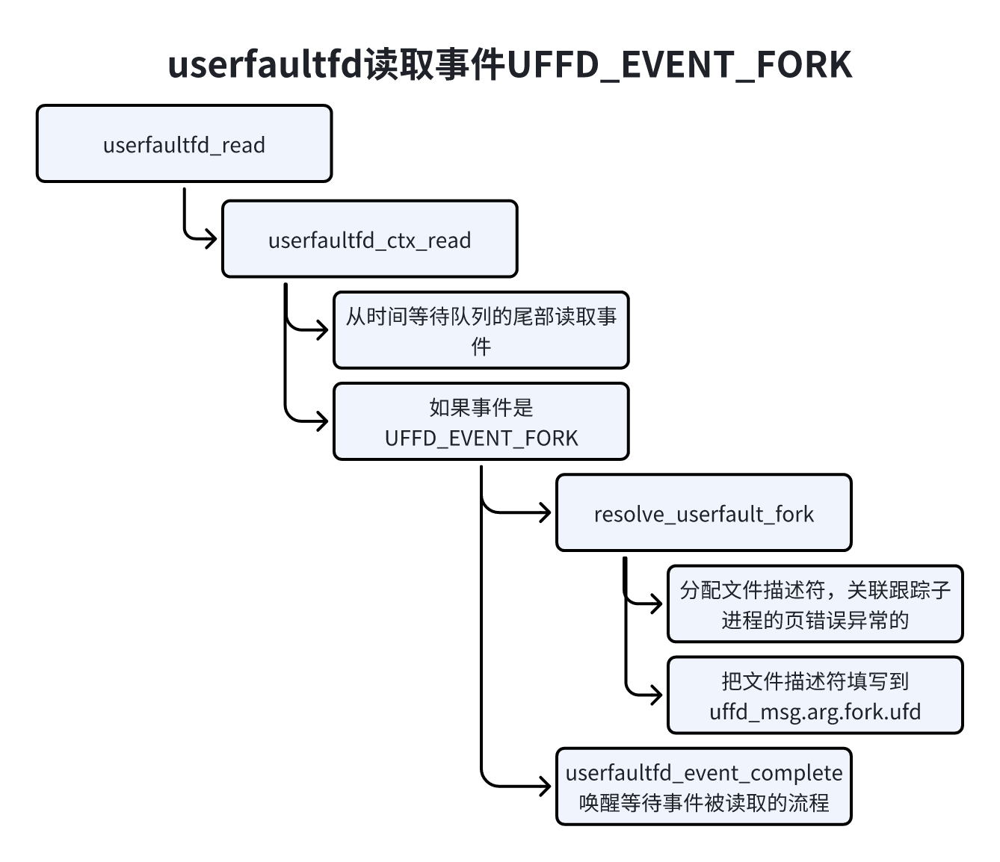

在系统长时间运行后，内存可能碎片化，很难找到连续的物理页，连续内存分配器（Contigous Memory Allocator CMA）使得这种情况下分配大的连续内存块成为可能。
嵌入式系统中许多设备不支持分散聚焦和I/O映射，需要连续的大内存块。例如手机上1300万像素的摄像头，一个像素占用3字节，拍摄一张照片大约37MB内存。在系统长时间运行后，内存可能碎片化，很难做找到连续的物理页，页分配器和块分配器很可能无法分配这么大的连续内存块。
一种解决方式为快设备保留一块打的内存区域，缺点是：当块设备驱动不使用的时候（大多数时间手机摄像头是空闲的）内核的其他模块不能使用这块内存。
连续内存分配器试图解决这个问题，保留一块打的内存区域，当设备区域不使用的时候，内核的其他模块可以使用，当然有要求：只有申请可移动类型的页时可以借用，当设备驱动器需要使用的时候，把已经分配的也迁移到其他地方，形成物理地址连续的大内存块。
编译内核时徐亚开启一下配置宏：
1）配种CONFIG_CMA，启用连续内存分配器。
2）配置宏CONFIG_CMA_AREAS，指定CMA气吁吁的最大数量，默认值是7。
3）配置宏CONFIG_DMA_CMA，启用允许双设备驱动分配内存的连续内存分配器。
CMA区域分为全局CMA区域和私有CMA区域，全局CMA区域是由所有设备驱动共享的，设备私有CMA区域由指定的一个或多个设备驱动使用。
配置CMA区域有3种方法：
1）通过内核参数”cma“配置全局CMA区域的大小。
使用内核参数”cma=m[MG]@[start[MG][-end[MG]]]“设置全局CMA区域的大小和物理地址范围。
2）通过配置宏配置全局CMA区域的大小。
首先选择制定大小的方式：CONFIG_CMA_SIZE_SEL_MBYTES表示指定兆字节数，CONFIG_CMA_SIZE_SEL_PERCENTAGE表示指定物理内存容量的百分比，默认使用指定兆字节数的方式。
如果选择制定兆字节数的方式，那么通过配置宏CONFIG_CMA_SIZE_MBYTES配置大小。如果配置宏为0，表示禁止CMA，但是可以传递内核参数”cma=m[MG]“以启用CMA。
如果选择制定物理内存容量的百分比的方式，那么通过配置宏CONFIG_CMA_SIZE_PERCENTAGE指定百分比。如果配置为0，表示禁用连续内存分配器，但是可以传毒内核参数”cma=nn[MG]“以启用连续内存分配器。
3）通过设备数源文件的节点”、reserved-memory“配置CMA区域，如果子节点的属性”compatible“的值是”shared-dma-pool“，表示CMA区域，否则表示设备私有CMA区域。
例如配置3个CMA区域。
1）全局CMA区域，节点名称是”linux,cma“，大小是64MB。
2）帧缓冲设备专用的CMA区域，节点名称是”framebuffer@78000000“，大小是8MB。
3）多媒体处理专用CMA区域，节点名称是”multimedia-memory@77000000“，大小是64MB。
设备树源文件如下：
1/ {2 3 4 memory {5 reg = <0x40000000 0x40000000>;6 };7 8 reserved-memory {9 10 11 rangs;12 13 linux,cma{14 comatible = "shared-dma-pool";15 reusable;16 size = <0x4000000>;17 alignment = <0x2000>;18 linux,cma-default;19 };20 21 display_reserved: framebuffer@78000000 {22 reg = <0x78000000 0x800000>;23 };24 25 multimedia_reserved: multimedia@7700000000 {26 compatible = "acme,multimedia-memory";27 reg = <0x77000000, 0x40000000>;28 };29 };30 ....31 32 fb0: video@12300000{33 memory-region = <&display_reserved>;34 ....35 };36 scaler: scaler@12500000{37 memory-region = <&dispaly_reserved>;38 ....39 };40 codec: codec@12600000{41 memory-region = <&multimedia_reserved>;42 ....43 };44};连续内存分配器是DMA映射框架的辅助架构，设备驱动程序不能直接使用连续内存分配器，软件层如下图所示：

连续内存分配器是在页分配器的基础上实现的，提供的接口cma_alloc，用来从CMA区域分配页，接口cma_release用来释放从CMA区域分配的页。
在连续内存分配的基础上实现了DMA映射框架专用的连续内存分配器，简称DMA专用连续内存分配器，提供的接口dma+alloc_from_contiguous用来从CMA区域分配页，接口dma_release_from_contiguous用来释放从CMA区域分配的页。
DMA映射框架从DMA专用连续内存分配器分配或释放页，为设备驱动程序提供的接口dma_alloc_coherent和dma_free_noncoherent用来释放内存。
设备驱动程序调用DMA映射框架提供的函数来分配或释放内存。
内核定义了结构体cma来描述一个CMA区域的信息，代码如下：
x1// 位置：mm/cma.h2
3struct cma {4 unsigned long base_pfn;5 unsigned long count;6 unsigned long *bitmap;7 unsigned int order_per_bit;8 struct mutex lock;9 const char *name;10}成员base_pfn：是CMA区域的其实页帧号。
成员count：页数。
成员bitmap：位图，每个位描述对应的页的分配状态，0表示空闲，1表示分配。
成员order_per_bit：指示位图的每个位描述的物理页的阶数，目前取值为0，表示每个位描述一页。
可以配置多个CMA区域，内核定义了一个数组用来管理CMA区域，全局变量cma_area_count存放配置的CMA
区域数量。
41// 位置：mm/cma.c2
3struct cma cma_areas[MAX_CMA_AREAS];4unsigned cma_area_count;页分配器为CMA区域的物理定义了迁移类型MIGRATE_CMA：
91// 位置：include/linux/mmzone.h2
3enum migratetype{4 ...5 6 MIGRATE_CMA,7 8 ...9};内存管理子系统初始化时，解析设备树二进制文件得到物理内存布局，使用memblock保存布局信息，memblock的memory类型保存内存块的物理地址范围，reserved类型保存保留内存块的物理地址范围，CMA区域属于保留内存块。
首先解析设备树二进制文件中的节点”memory“，把内存块添加到memblock的memory类型。
如果通过设备树源文件配置CMA区域，创建CMA区域的执行流程如下图所示：

解析设备树二进制文件中的节点“reserved-memory”，把保留内存块添加到memblock的reserved类型。
函数__reserved_mem_init_node调用注册的所有保留内存初始化参数，保留内存初始化函数是使用宏RESERVEDMEM_OF_DECLARE定义的，放在“__reservedmem_of_table”节点里面，其中全局CMA区域的初始化函数rmem_cma_setup。
函数rmem_cma_setup从数组cma_areas分配一个数组项，保存CMA区域的其实页帧号和页数，如果指定了属性“linux,cma-default”，那么这个CMA区域是默认的CMA区域，设置全局变量dma_contiguous_default_area指向这个CMA区域。
如果通过内核参数或配置宏配置全局CMA区域，创建CMA区域的执行流程如下图所示：

函数dma_contiguous负责创建全局CMA区域。
memblock是内核初始化的时候使用内存分配器，内核吃啥完成以后使用伙伴分配器管理物理页。内核初始化完成的时候，把空闲的内存释放给伙伴分配器，不会把保留的内存释放给伙伴分配器。CMA区域属于保留的内存，但是我们需要把CMA区域的物理页交给伙伴分配管理。
连续内存分配器注册了初始化函数cma_init_reserved_areas：
31// 位置：mm/cma.c2
3core_initcall(cma_init_reserved_areas);函数cma_init_reserved_areas负责把所有CMA区域的物理页释放给伙伴分配器，执行流程如下图所示，针对每个CMA区域，先把页块迁移类型设置为MIGRATE_CMA，然后调用函数__free_pages把页块释放给伙伴分配器。

当设备驱动程序不使用CMA区域的时候，内核的其他模块可以借用CMA区域的物理页，页分配器只允许可移动类型从CMA类型借用物理页。
如下图所示，页分配物理页的时候执行流程：

从指定迁移类型分配页。
如果分配失败，从备用迁移类型借用物理页。
如果指定秦阿姨类型是可移动类型，首先从CMA类型借用物理页。
从备用迁移类型列表中的每个迁移类型借用物理页。
当设备驱动程序需要使用CMA区域的时候，如果CNA区域中的物理页已经页分配器分配出去，需要把物流业迁移到其他地方。
函数cma_alloc负责从CMA区域分配内存，执行流程如下图所示：
在CMA区域的位图中茶轴一个足够大的空闲页块。
在位图中把物理页的分配状态设置为已分配。
调用函数alloc_contig_range，把页分配器已分配出去的物理页迁移到其他地方。
如果迁移失败，回到第1步，查找下一个足够大的空闲页并尝试分配，直到分配成功或尝试完所有空闲页块。
函数alloc_contig_range执行流程如下：
调用函数start_isolate_page_range，把物理页的迁移类型设置隔离类型（MIGRATE_ISOLATE），隔离物理页，防止页分配器把空闲页分配出去。
调用函数__alloc_contig_migrate_range，处理页分配器已分配出去的物理页。
调用函数__alloc_clean_pages_from_list，回收干净的文件页，文件页不可移动，只可回收。
调用函数migrate_pages，把可移动的物理页迁移到其他地方。
调用函数isolate_freepages_range处理空闲页，把空闲页从页分配器的空闲链表中删除。
调用函数undo_isolate_page_range，撤销对物理页的隔离，把物理页的迁移类型设置为CMA类型。
函数cma_release负责释放CMA区域的内存，执行流程如下图所示：

检查物理页是否属于CMA区域。
把物流业释放给页分配器。
在CMA区域的位图中把物理页的分配状态设置为空闲。
userfaultfd（用户错误文件描述符）用来拦截和处理用户空间的页错误异常，内核通过文件描述符将页错误异常的信息传递给用户空间，然后由用户空间决定要往虚拟页写入的数据，传统的页错误异常独自处理，现在改成由内核和用户空间一起控制。
userfaultfd是为了解决QEMNU/KVM虚拟机动态迁移的问题而出现的，所谓动态迁移，就是将虚拟机从一端迁移到另一端，而在迁移过程中虚拟机能够从继续提供服务，有两种实现方案：
前复制（precopy）方案：这种方案在目的端的虚拟机运行前把所有的数据复制过去。先将虚拟机的内存迁移到对端，再检查在迁移的过程中是否有页面发生更改（即脏页）。如果有，就把脏页传到对端，一直重复这个过程，直到没有脏页或者脏页的数目足够少。脏页全部迁移过去之后，就可以把源端的虚拟机关闭掉，然后启动目的端的虚拟机。
后复制（postcopy）：先让目的端的虚拟机运行起来，当虚拟机运行过程中需要访问尚未迁移的内存时才把内存从源端读过来。
后复制方案和前你复制方案有各自的优缺点：如前复制方案有较高的吞吐率，而后复制方案可以在虚拟机工作负载较高的情况下能够较快的完成迁移工作。
userfaultfd是为后复制方案准备的，当虚拟机在目的端运行的时候，目的端的内核不可能直到要往页里面填充的内容，需要借助用户空间的程序来吧内容从远端读过来，然后把这些内容放到虚拟机的内存中。
应用程序使用userfaultfd跟踪处理页错误异常的方法如下：
使用系统调用userfaultfd创建一个文件描述符：
11int userfaultfd(int flags)参数flags可以是0或以下标记的组合：
O_CLOEXEC：使用execve装载新程序时关闭文件描述符。
O_NONBLOCK：非阻塞模式。
代码如下：
21int uffd;2uffd = syscall(__NR_userfaultfd, O_CLEXEC | O_NONBLOCK);使用控制命令（UFFDIO_API）请求验证版本号和启用某些特性，如果内核userfaultfd的 版本号是请求的版本号，并且支持请求启用的所有特性，那么成功启用userfaultfd，返回内核支持的所有特性和控制命令。
参数的数据类型如下：
51struct uffdio_api{2 __u64 api;3 __u64 features;4 __u64 ioctls;5}调用者使用成员api指定初始版本号，使用成员features指定求情启用的特性，成员features为0表示启用默认特性，如果成功启用userfaultfd，那么成员features返回内核支持的所有特性，成员iotls返回内核支持的所有控制命令。
默认启用的特性是跟踪普通页的页错误异常，userfaultfd还支持以下特性：
1）UFFD_FEATURE)PAGEFAULT_FLAG_WP：表示跟踪类型为“写只读页”的页错误异常。
2）UFFD_FEATURE_EVENT_FORK：表示启用父进程跟踪子进程的页错误异常：父进程调用fork创建子进程，把userfaultfd上下文，父进程收到事件UFFD_EVENT_FORK和新的userfaultfd上下文的文件描述符，使用文件描述符跟踪处理子进程的页错误异常。
3）UFFD_FEAULT_EVENT_REMAP：表示启用mremap调用的通知，当进程使用mremap把一个虚拟内存区域移到不同的位置的时候，userfaultfd收到事件UFFD_EVENT_REMAP，uffd_msg.remap包含虚拟内存区域的旧地址、新地址和旧长度。
4）UFFD_FEAUTURE_EVENT_REMOVE表示启用madvise(MADV_REMOVE)和madvise(MADV_DONOTNEED)包含虚拟内存区域的旧地址、新地址和旧长度。
5）UFFD_FEATURE_MISSING_HUGETLBFS：表示跟踪标准巨型页的页错误异常。
6）UFFD_FEATURE_MISSING_SHMEM：表示跟踪tmpfs文件页和共享内存的页错误异常。
7）UFFD_FEATURE_EVENT_UNMAP：表示启用munmap调用的通知，大勇munmap的时候，userfaultfd收到事件UFFD_EVENT_UNMAP，uffd_msg.remove包含被删除的虚拟内存区域的起始地址和结束地址。
例如启用默认特性：
61struct uffdio_api uffdio_api;2
3uffdio_api.api = UFFD_API;4uffdio_api.features = 0;5
6ioctl(uffd, UFFDIO_API, &uffdio_api);创建内存映射，从用户虚拟地址空间分配一个虚拟地址范围。
例如创建一个私有的匿名映射，代码如下：
41char *addr;2
3addr = mmap(NULL, len, PROT_READ | PROT_WRITE , 4 MAP_PRIVATE | MAP_ANONYMOUS, -1 , 0);使用控制命令UFFDIO_REGISTER注册虚拟地址范围，跟踪指定虚拟地址范围的页错误异常。
参数的数据类型如下：
51struct uffdio_register{2 struct uffdio_range range;3 __u64 mode;4 __u64 iotls;5};成员range指定地址和长度；成员mode指定跟踪哪些类型的页错误异常，可以是这些标志的组合：UFFDIO_REGISTER_MODE_MISSING表示跟踪缺页，UFFDIO_REGISTER_MODE_WP表示跟踪写只读页，当钱只支持UFFDIO_REGISTER_MODE_MISSING。
成员ioctls返回在指定虚拟地址范围内可以使用哪些控制命令。
例如跟踪某个虚拟地址范围的缺页异常：
61struct uffdio_register uffdio_register;2
3uffdio_register.range.start = (unsigned long )addr;4uffdio_register.len = len;5uffdio_register.mode = UFFDIO_REGISTER_MODE_MISSING;6ioctl(uffd, UFFDIO_REGISTER, &uffdio_register);使用select或poll监听文件可读。进程访问注册的虚拟地址范围，如果生成页错误异常，内核将会把错误异常传递给进程，userfaultfd文件变成可读。
需要使用两个线程：一个线程访问虚拟地址以触发页错误异常；另一个线程调用poll会见厅文件可读。
代码如下：
61struct pollfd_pollfd;2int nready;3
4pollfd.fd = uffd;5pollfd.events = POLLIN;6nready = poll(&pollfd , 1, -1);使用read读取事件，事件信息的数据类型是结构体uffd_msg，事件的类型如下：
UFFD_EVENT_PAGEFAULT：页错误异常。
UFFD_EVENT_FORK：fork调用。
UFFD_EVENT_REMAP：mremap调用。
UFFD_EVENT_REMOVE：madvise(MADV_REMOVE)和madvise(MADV_DONTNEED)调用。
UFFD_EVENT_ENMAP：munmap调用。
代码如下：
141sszie nread;2struct uffd_msg msg;3
4nread = read(uffd, &msg, sizeof(msg));5if(msg.event != UFFD_EVENT_PAGEFAULT){6 fprint(stderr, "Unexpected event on userfaultd \n");7 exit(EXIT_FAILURE);8}9
10
11// 显示页错误时间信息12printf("UFFD_EVENT_PAGEFAULT event:");13printf("flags = %lx;",msg.arg.pagefault.flags);14printf("address = %lx\n", msg.arg.pagefault.address);使用控制命令UFFDIO_COPY把数据复制到触发页错误异常的虚拟页，或者使用控制命令UFFDIO_ZERO把虚拟页映射到零页。
控制命令UFFDIO_COPY的参数的数据类型如下：
91struct uffdio_copy{2 __u64 dst;3 __u64 src;4 __u64 len;5 6 7 __u64 mode;8 __u64 copy;9};成员dst是目的地址，成员src是源地址，成员len是长度。
成员mode是模式，UFFDIO_COPY_MODE_DONTWAKE表示不要唤醒等待事件被读取的线程，稍后进程使用命令UFFDIO_WAKE唤醒等待的线程。
成员copy返回复制的字节数。
代码如下：
121int page_size;2struct uffdio_copy uffdio_copy;3
4// 获取页长度5page_size = sysconf(SC_PAGE_SIZE);6// 复制源地址7uffdio_copy.src = (unsigned long )src;8uffdio_copy.len = (unsigned long) msg.pagefault.address & ~(page_size - 1);9uffdio_copy.len = page_size;10uffdio_copy.mode = 0;11uffdio_copy.copy = 0;12ioctl(uffd, UFFDIO_COPY, &uffdio_copy);父进程跟踪子进程的页错误异常的方法如下：
1）使用控制命令UFFDIO_API请求启用特性UFFD_FEATURE_EVENT_FORK。
2）使用控制命令UFFDIO_REGISTER注册虚拟地址范围。
3）使用fork创建子进程。
4）使用read读取事件UFFD_EVENT_FORK，uffd_msg.fork.nfd是userfaultfd文件描述符，用来跟踪子进程的虚拟内存区域的页错误异常。
应用程序使用userfaultfd跟踪处理页错误异常的主要步骤如下：
1）使用系统调用userfaultfd创建文件描述符。
2）使用控制命令UFFDIO_API请求验证版本号和启用某些特性。
3）从用户虚拟地址空间范围分配一个虚拟地址范围。
4）使用select或poll监听文件可读。
5）使用select或poll监听文件可读。
6）访问注册的虚拟地址范围，生成页错误异常，页错误异常处理程序唤醒使用select 或 poll监听的进程。
7）使用read读事件。
8）使用控制命令UFFDIO_COPY把数据复制到触发页错误异常的虚拟页。
userfaultfd的主要数据结构是userfaultfd上下文，每次调用系统调用userfaultfd就会创建一个userfaultfd上下文，类型如下：
261// 位置：fs/userfaultfd.c2
3struct userfaultfd_ctx {4 // 是未读页错误等待队列，现成触发页错误异常后，等待userfaultfd读取页错误事件5 wait_queue_head_t fault_pending_wqh;6 // 是已读取页错误等待队列，userfaultfd已读取页错误事件，还每唤醒触发页错误异常的线程7 wait_queue_head_t fault_wqh;8 // 是文件描述符等待队列，userfaultfd等待事件发生9 wait_queue_head_t fd_wqh;10 // 是事件等待队列，等待userfaultfd读取事件11 wait_queue_head_t event_wqh;12 // 是顺序锁，用来保护未读取页错误等待队列和已读页错误等待队列13 struct seqcount refile_seq;14 // 是引用计数15 atomic_t refcount;16 // 保护进程调用系统调用userfaultfd指定的标志17 unsigned int flags;18 // 保存进程请求启用的特性19 unsigned int features;20 // 是状态，UFFD_STATE_WAIT_API表示等待进程请求验证版本号和启用某些额特性，UFFD_STATE_REUNNING表示运行状态21 enum userfaultfd_state state; 22 // 表示userfaultfd文件描述符是否被关闭23 bool released;24 // 指向mm进程的内存描述符。25 struct mm_struct *mm;26};系统调用userfaultfd负责创建文件描述符，执行流程如下：
1）分配文件描述符。
2）创建一个userfaultfd上下文：成员flags保存调用者传入的标志；成员state是状态，初始值是UFFD_STATE_WAIT_API；成员mm指向调用进程的内存描述符。
3）创建内部文件的一个打开实例file。
成员f_inode指向内部文件的索引文件（全局变量anon_inode_inode指向内部文件的搜索引节点）。
成员f_op指向userfaultfd文件操作集合，进程使用poll查询状态调用其中的poll方法，使用read读文件时调用其中的read方法，使用ioctl执行命令时调用其中的unlocked_iotl方法。
成员private_date指向userfaultfd上文文。
4）把文件描述符和file实例的映射添加到进程的打开文件表中。
userfaultfd数据结构关系如下图所示：

进程执行控制命令UFFDIO_REGISTER的时候，ioctl将会调用userfaultfd文件操作集合的unlocked_iotl方法，即函数userfaultfd_ioctl，函数userfaultfd_ioctl调用命令UFFDIO_GISTER的处理函数userfaultfd_register。
函数userfaultfd_register针对注册的虚拟地址范围包含的每个虚拟内存区域vma处理如下：
1）如果跟踪页，vma->vma_flags设置标志VM_UFFD_MISSING。
2）把虚拟内存区域关系到userfaultfd上下文，即vma->vm_userfaultfd_ctx.ctx指向userfaultfd_ctx实例。
3）对于第一个和最后一个虚拟内存区域，如果只跟踪其中的一部分，那么把虚拟内存区域分裂成两个。
进程调用pol监听事件的时候，poll将会调用userfaultfd文件操作集合的poll方法，即函数userfaultfd_poll执行过程如下：
1）如果userfaultfd上下文的未读取页错误等待队或时间等待队列不是空的，那么返回POLLIN，表示文件可读。
2）否则，把进程挂载userfaultfd上下文的文件描述符等待队列上，睡眠等待。
如下图所示，在页错误异常处理程序中，如果匿名映射的虚拟页没有映射到物理页，并且虚拟内存区域设置了标志VM_UFFD_MISSING，那么调用函数handle_userfaultfd，把页错误信息传递给userfaultfd。

函数handle_userfault的主要代码如下：
1191// 位置：fs/userfaultfd.c2
3int handle_userfault(struct vm_fault *vmf, unsigned long reason)4{5 struct mm_struct *mm = vmf->vma->vm_mm;6 struct userfaultfd_ctx *ctx;7 struct userfaultfd_wait_queue uwq;8 int ret;9 bool must_wait, return_to_userland;10 long blocking_state;11
12 ret = VM_FAULT_SIGBUS;13
14 if (current->flags & (PF_EXITING|PF_DUMPCORE))15 goto out;16
17 WARN_ON_ONCE(!rwsem_is_locked(&mm->mmap_sem));18
19 // 获取跟踪虚拟内存的userfaultfd上下文20 ctx = vmf->vma->vm_userfaultfd_ctx.ctx;21 if (!ctx)22 goto out;23
24 BUG_ON(ctx->mm != mm);25
26 VM_BUG_ON(reason & ~(VM_UFFD_MISSING|VM_UFFD_WP));27 VM_BUG_ON(!(reason & VM_UFFD_MISSING) ^ !!(reason & VM_UFFD_WP));28
29 if (unlikely(ACCESS_ONCE(ctx->released)))30 goto out;31
32 if (unlikely(!(vmf->flags & FAULT_FLAG_ALLOW_RETRY))) {33
34 BUG_ON(vmf->flags & FAULT_FLAG_RETRY_NOWAIT);35 if (printk_ratelimit()) {37 printk(KERN_WARNING38 "FAULT_FLAG_ALLOW_RETRY missing %x\n",39 vmf->flags);40 dump_stack();41 }42 goto out;44 }45
46 ret = VM_FAULT_RETRY;47 if (vmf->flags & FAULT_FLAG_RETRY_NOWAIT)48 goto out;49
50 // 把userfaultfd上下文的引用计数加151 userfaultfd_ctx_get(ctx);52
53 // 初始化变量uwq54 // 1）成员wq是等待队列的节点55 // 2）成员msg保存页错误信息，msg.event是UFFD_EVENT_PAGEFAULT，msg.arg.pagefault.address56 // 是触发页错误异常的虚拟地址，如果执行写操作触发页错误异常，那么msg.arg.pagefaultfd.flags设置标志位57 // UFFD_PAGEFAULT_FLAG_WRITE58 // 3）成员ctx指向userfaultfd上下文59 // 4）成员waken设置为假60 init_waitqueue_func_entry(&uwq.wq, userfaultfd_wake_function);61 uwq.wq.private = current;62 uwq.msg = userfault_msg(vmf->address, vmf->flags, reason);63 uwq.ctx = ctx;64 uwq.waken = false;65
66 return_to_userland =67 (vmf->flags & (FAULT_FLAG_USER|FAULT_FLAG_KILLABLE)) ==68 (FAULT_FLAG_USER|FAULT_FLAG_KILLABLE);69 blocking_state = return_to_userland ? TASK_INTERRUPTIBLE :70 TASK_KILLABLE;71
72 spin_lock(&ctx->fault_pending_wqh.lock);73
74 // 把变量uwq的成员wq添加到userfaultfd上下文的未读页错误的带队列的首部75 __add_wait_queue(&ctx->fault_pending_wqh, &uwq.wq);76
77 // 设置当前线程的状态，如果页错误异常是由用户模式生成的，把线程状态设置轻度寿面；如果页错误异常是由内核模式生成的，把线程状态设成中78 // 度睡眠79 set_current_state(blocking_state);80 spin_unlock(&ctx->fault_pending_wqh.lock);81
82 if (!is_vm_hugetlb_page(vmf->vma))83 must_wait = userfaultfd_must_wait(ctx, vmf->address, vmf->flags,84 reason);85 else86 must_wait = userfaultfd_huge_must_wait(ctx, vmf->address,87 vmf->flags, reason);88 up_read(&mm->mmap_sem);89
90 if (likely(must_wait && !ACCESS_ONCE(ctx->released) &&91 (return_to_userland ? !signal_pending(current) :92 !fatal_signal_pending(current)))) {93 // 唤醒正在系统调用pool/read中等待事件发生的线程94 wake_up_poll(&ctx->fd_wqh, POLLIN);95 schedule();96 ret |= VM_FAULT_MAJOR;97
98 // 如果当前线程被唤醒 ，但uwq.waken为假，说明假唤醒，那么继续睡眠等待99 while (!READ_ONCE(uwq.waken)) {100
101 set_current_state(blocking_state);102 if (READ_ONCE(uwq.waken) ||103 READ_ONCE(ctx->released) ||104 (return_to_userland ? signal_pending(current) :105 fatal_signal_pending(current)))106 break;107 schedule();108 }109 }110
111 // 当前线程被唤醒，把状态设置为TASK_RUNNING112 __set_current_state(TASK_RUNNING);113 ....114 // 把userfaultfd上下文的引用计数减1115 userfaultfd_ctx_put(ctx);116
117out:118 return ret;119}页错误异常处理程序等待事件发生的线程唤醒以后，现成调用read读取事件，read调用userfaultfd文件操作集合的read方法，即函数userfaultfd_read。
函数userfaultfd_read反复调用函数userfaultfd_ctx_read读取消息，直接把进程提供缓冲区填满或者读完所有消息为止。
函数userfaultf_ctx_read的执行流程如下：
1）先查看未读取页错误等待队列，如果未读取页错误等待队列不是空的，那么从尾部读取一个节点，从节点读取消息，把节点移到已读页错误等待队列，避免下一次从未读取错误队列取同一个节点。
2）如果未读取页错误等待队列是空的，就查看事件等待队列。如果事件等待队列不是空的那么从尾部取一个节点，读消息，并且唤醒等待事件被读取的线程。
进程读取事件以后，执行控制命令UFFDIO_COPY，把数据复制到触发页错误异常的虚拟页。ioctl将会调用函数userfaultfd_iotl，然后函数userfaultfd_iotl调用命令UFFDIO_COPY的处理函数userfaultfd_copy。
函数userfaultfd_copy执行流程如下：
1）调用函数mcopy_atomic，分配物理页，把数据复制到物理页，在机场南合格的页表中把虚拟页映射到物理页。
2）如果调用者允许被花牛徐呢个，那么调用wake_userfault，唤醒userfaultf上下文未读取页错误等待队列和已读取页错误等待队列中访问复制的目的的虚拟页触发异常的所有线程；否则，进程使用命令UFFDIO_WAKE唤醒等待的线程。
如下图所示调用fork创建子进程的时候，函数dum_mmap针对userfaultf的处理如下：

遍当前进程的虚拟内存区域，调用函数dup_userfaultfd：如果虚拟内存区域被userfaultfd跟踪，并且userfaultfd启用特性UFFD_FEAULTURE_EVENRE_FORK，那么为子进程的虚拟内存区域复制userfaultfd上下文。
调用函数dup_userfaultfd_conplete：针对当前进程的每个userfaultfd上下文，挂载时间等待队列上等待userfaultfd读取事件UFFD_EVENT_FORK。
如下图所示，进程调用read以读取事件，函数userfaultfd_ctx_read从userfaultfd上下文的时间等待队列的尾部读取一个事件，如果事件时UFFD_EVENT_FORK，处理如下：

调用函数resolve_userfault_fork：分配文件描述符，关联到跟踪子进程的页错误异常的userfaultfd上下文，把文件描述符先写到消息uffd_msg的成员arg.fork.ufd中。
调用函数userfaultfd_event_complete唤醒等待一时间被读取的线程。
进程读取消息以后，从小修的成员arg.fork.ufd得到文件描述符，使用文件描述符跟踪处理自己吃那更得页错误异常。
内核地址消毒剂（Kernel Address SANitizer，KASAN）是一个动态的内存错误检查工具，为发现“释放后使用”和“越界访问”这两类缺陷提供了快速和综合的解决方案。
KASAN使用编译时插桩（compile-time instrumentation）检查每个内存访问，要求GCC编译器的版本至少4.9.2，检查栈或全局变量的越界访问需要GCC编译器的版本至少是5.0。
内核支持KASAN的进展如下：
1）4.0版本引入KASAN，仅x86_64架构支持，只有SLUB分配器支持KASAN。
2）4.4版本的ARM64架构支持KASAN。
3）4.6版本的SLAb分配器支持KASAN。
编译内核时需要开启以下配置宏。
1）有些版本开启SLUB分配器的调试配置宏CONFIG_SLUB_DEBUG，才能看到KASAN的配置菜单项。最新版本不需要，但是建议开启，因为可以打印更多有用的信息。
2）开启配置宏CONFIG_KASAN。
3）选择编译时插桩类型：配置宏CONFIG_KASAN_OUTLINE启用外联插桩，配置宏CONFIG_KASAN_INLINE启用内联插桩。外联插桩编译生成的程序小，内联插桩编译生成的程序运行速度块。内联手段需要GCC编译器的版本至少5.0。
4）为了更好的缺陷检查和报告，开启配置宏CONFIG_STACKTRACE。
如果需要为特定文件或目录禁止编译时插桩，在内核的Makefile文件中添加。
1）为单个文件，例如：main.o：KASAN_SANITIZE_main:=n。
2）为某个目录里面的所有文件：KASNAN_SAN_TIZE:=n。
KASAN使用影子内促怒（shadown memeory）记录内存的每个内存字节是否可以安全访问，使用编译时插桩在每次访问内存时检查影子内存。
KASAN使用内核地址空间的1/8作为影子内存，影子内存的每个字节记录内存连续8字节的状态。
1）如果8字节都可以范文，那么影子内存的值是0。
2）如果连续n(1<= n <= 7)字节可以访问，那么影子内存的值是n。
3）如果8字节都不能访问，那么影子内存的值是负数，使用不同的负数区分不同类型的不可访问内存，代码如下：
51// 页已被释放2// kmalloc_large()分配红色区域3// SLAB对象里面的红色区域4// SLAB对象已被释放5// 全局变量的红色区域把内存的内核虚拟地址转换成影子地址的方法如下：
41static inline *ksan_mem_to_shadow(const void *addr)2{3 return (void *)((unsigned long)addr >> KASAN_SHADOW_SCALE_SHIFT) + KASAN_SHADOW_OFFSET; 4}其中KASAN_SHODOW_SCALE_SHIFT的值是3。
KASAN使用编译时插桩检查内存访问，编译内核时需要指定编译选项“-fsanitize=kernel-address”。编译器在加载指令的前面插入函数调用“__asan_loadN(addr)”来检查内存访问是否合法，在存储指令的前面插入函数调用“__asan_storeN(addr)”来检查内部访问是否合法，N是字节数，可能是1、2、3、4、8或16。如果加载指令从内存加载1字节，那么编译器加载指令的前面插入函数调用“__asan_load(addr)”。如果存储指令1字节的内存中，那么编译器在存储指令前面插入函数调用“__asan_store(addr)”。